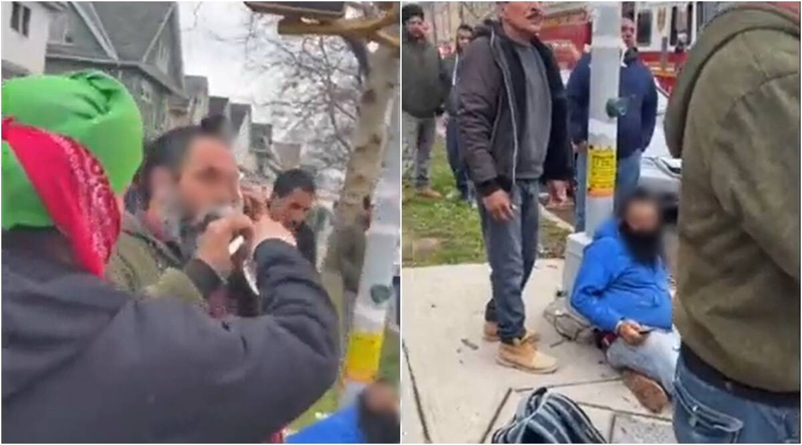
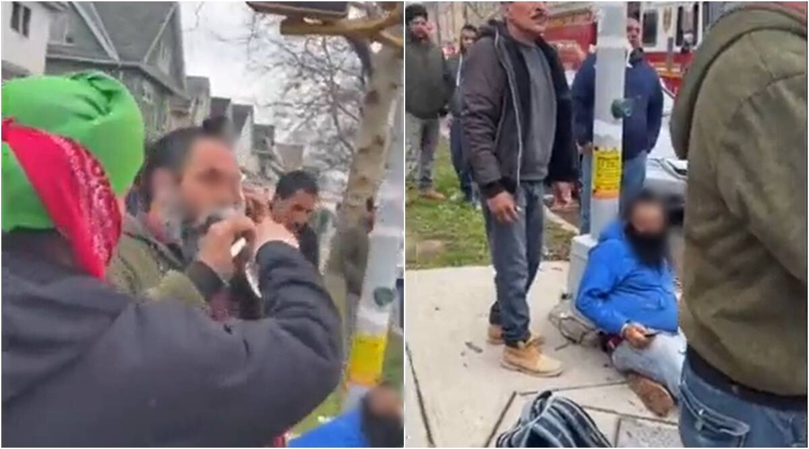

Hate Crime in the US
What is a hate crime?
A hate crime is a criminal offense against a person or property that is motivated based on their race, religion, color, gender, or sexual orientation.
What can happen when caught committing a hate crime?
For the first offense, hate crime is a Class 3 felony and for every subsequent offense, it becomes a Class 2 felony.
Real Instances of Hate Crime in NYC
https://newyorkpcg.org/pcgny/2022/03/14/new-york-authorities-urged-to-do-more-after-67-year-old-filipina-becomes-the-latest-victim-of-anti-asian-hate-crime/
https://abcnews.go.com/US/suspect-charged-hate-crime-allegedly-attacking-asian-woman/story?id=87762879
https://indianexpress.com/article/world/sikh-men-attacked-new-york-queens-7867125/
https://www.ny1.com/nyc/all-boroughs/in-focus-shows/2019/09/22/in-focus-nyc-anti-semitism-rise-why-it-is-happening

 
